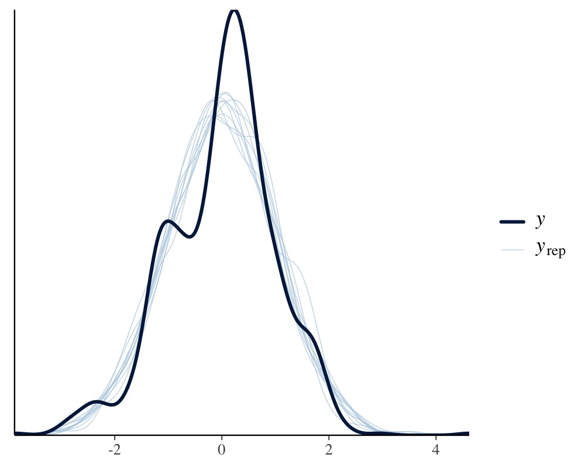
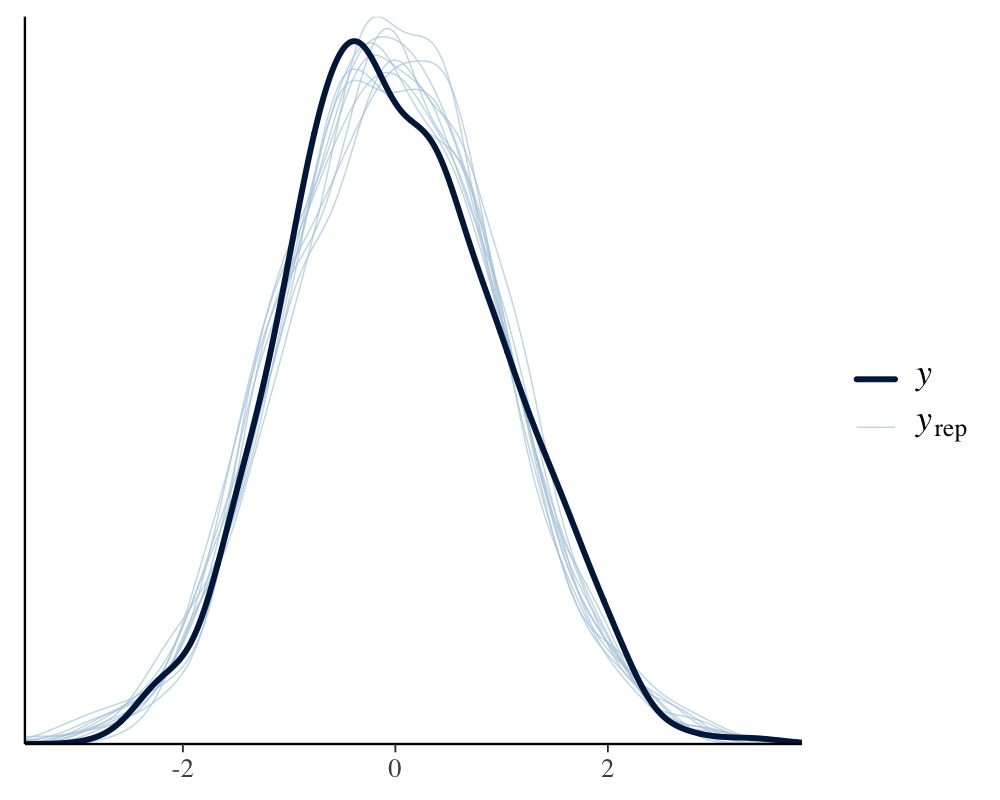
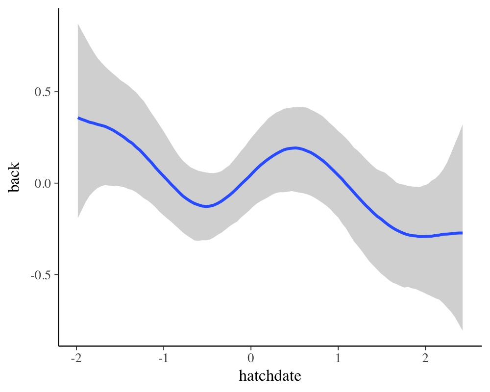

vignettes/brms_multivariate.Rmd
brms_multivariate.RmdIn the present vignette, we want to discuss how to specify
multivariate multilevel models using brms. We call a
model multivariate if it contains multiple response variables,
each being predicted by its own set of predictors. Consider an example
from biology. Hadfield, Nutall, Osorio, and Owens (2007) analyzed data
of the Eurasian blue tit (https://en.wikipedia.org/wiki/Eurasian_blue_tit). They
predicted the tarsus length as well as the
back color of chicks. Half of the brood were put into
another fosternest, while the other half stayed in the
fosternest of their own dam. This allows to separate
genetic from environmental factors. Additionally, we have information
about the hatchdate and sex of the chicks (the
latter being known for 94% of the animals).
tarsus back animal dam fosternest hatchdate sex
1 -1.89229718 1.1464212 R187142 R187557 F2102 -0.6874021 Fem
2 1.13610981 -0.7596521 R187154 R187559 F1902 -0.6874021 Male
3 0.98468946 0.1449373 R187341 R187568 A602 -0.4279814 Male
4 0.37900806 0.2555847 R046169 R187518 A1302 -1.4656641 Male
5 -0.07525299 -0.3006992 R046161 R187528 A2602 -1.4656641 Fem
6 -1.13519543 1.5577219 R187409 R187945 C2302 0.3502805 FemWe begin with a relatively simple multivariate normal model.
bform1 <-
bf(mvbind(tarsus, back) ~ sex + hatchdate + (1|p|fosternest) + (1|q|dam)) +
set_rescor(TRUE)
fit1 <- brm(bform1, data = BTdata, chains = 2, cores = 2)As can be seen in the model code, we have used mvbind
notation to tell brms that both tarsus and
back are separate response variables. The term
(1|p|fosternest) indicates a varying intercept over
fosternest. By writing |p| in between we
indicate that all varying effects of fosternest should be
modeled as correlated. This makes sense since we actually have two model
parts, one for tarsus and one for back. The
indicator p is arbitrary and can be replaced by other
symbols that comes into your mind (for details about the multilevel
syntax of brms, see help("brmsformula")
and vignette("brms_multilevel")). Similarly, the term
(1|q|dam) indicates correlated varying effects of the
genetic mother of the chicks. Alternatively, we could have also modeled
the genetic similarities through pedigrees and corresponding relatedness
matrices, but this is not the focus of this vignette (please see
vignette("brms_phylogenetics")). The model results are
readily summarized via
fit1 <- add_criterion(fit1, "loo")
summary(fit1) Family: MV(gaussian, gaussian)
Links: mu = identity; sigma = identity
mu = identity; sigma = identity
Formula: tarsus ~ sex + hatchdate + (1 | p | fosternest) + (1 | q | dam)
back ~ sex + hatchdate + (1 | p | fosternest) + (1 | q | dam)
Data: BTdata (Number of observations: 828)
Draws: 2 chains, each with iter = 2000; warmup = 1000; thin = 1;
total post-warmup draws = 2000
Multilevel Hyperparameters:
~dam (Number of levels: 106)
Estimate Est.Error l-95% CI u-95% CI Rhat Bulk_ESS
sd(tarsus_Intercept) 0.48 0.05 0.39 0.59 1.00 840
sd(back_Intercept) 0.25 0.08 0.10 0.40 1.01 280
cor(tarsus_Intercept,back_Intercept) -0.52 0.22 -0.94 -0.09 1.00 512
Tail_ESS
sd(tarsus_Intercept) 1115
sd(back_Intercept) 621
cor(tarsus_Intercept,back_Intercept) 784
~fosternest (Number of levels: 104)
Estimate Est.Error l-95% CI u-95% CI Rhat Bulk_ESS
sd(tarsus_Intercept) 0.27 0.05 0.16 0.37 1.00 589
sd(back_Intercept) 0.35 0.06 0.23 0.46 1.00 518
cor(tarsus_Intercept,back_Intercept) 0.71 0.20 0.25 0.99 1.00 248
Tail_ESS
sd(tarsus_Intercept) 1154
sd(back_Intercept) 822
cor(tarsus_Intercept,back_Intercept) 491
Regression Coefficients:
Estimate Est.Error l-95% CI u-95% CI Rhat Bulk_ESS Tail_ESS
tarsus_Intercept -0.41 0.07 -0.54 -0.27 1.00 1412 1537
back_Intercept -0.01 0.06 -0.14 0.11 1.00 2190 1410
tarsus_sexMale 0.77 0.06 0.65 0.89 1.01 3559 871
tarsus_sexUNK 0.23 0.13 -0.02 0.48 1.00 3676 1425
tarsus_hatchdate -0.04 0.06 -0.16 0.07 1.00 1306 1234
back_sexMale 0.01 0.07 -0.13 0.14 1.00 3812 1497
back_sexUNK 0.15 0.16 -0.16 0.46 1.00 3625 1291
back_hatchdate -0.09 0.05 -0.19 0.01 1.00 1930 1469
Further Distributional Parameters:
Estimate Est.Error l-95% CI u-95% CI Rhat Bulk_ESS Tail_ESS
sigma_tarsus 0.76 0.02 0.72 0.80 1.00 2288 1290
sigma_back 0.90 0.02 0.86 0.95 1.00 2997 1525
Residual Correlations:
Estimate Est.Error l-95% CI u-95% CI Rhat Bulk_ESS Tail_ESS
rescor(tarsus,back) -0.05 0.04 -0.13 0.02 1.00 3262 1442
Draws were sampled using sampling(NUTS). For each parameter, Bulk_ESS
and Tail_ESS are effective sample size measures, and Rhat is the potential
scale reduction factor on split chains (at convergence, Rhat = 1).The summary output of multivariate models closely resembles those of
univariate models, except that the parameters now have the corresponding
response variable as prefix. Across dams, tarsus length and back color
seem to be negatively correlated, while across fosternests the opposite
is true. This indicates differential effects of genetic and
environmental factors on these two characteristics. Further, the small
residual correlation rescor(tarsus, back) on the bottom of
the output indicates that there is little unmodeled dependency between
tarsus length and back color. Although not necessary at this point, we
have already computed and stored the LOO information criterion of
fit1, which we will use for model comparisons. Next, let’s
take a look at some posterior-predictive checks, which give us a first
impression of the model fit.
pp_check(fit1, resp = "tarsus")
pp_check(fit1, resp = "back")
This looks pretty solid, but we notice a slight unmodeled left
skewness in the distribution of tarsus. We will come back
to this later on. Next, we want to investigate how much variation in the
response variables can be explained by our model and we use a Bayesian
generalization of the
coefficient.
bayes_R2(fit1) Estimate Est.Error Q2.5 Q97.5
R2tarsus 0.4339714 0.02341032 0.3861391 0.4784598
R2back 0.1981148 0.02770076 0.1436043 0.2522732Clearly, there is much variation in both animal characteristics that we can not explain, but apparently we can explain more of the variation in tarsus length than in back color.
Now, suppose we only want to control for sex in
tarsus but not in back and vice versa for
hatchdate. Not that this is particular reasonable for the
present example, but it allows us to illustrate how to specify different
formulas for different response variables. We can no longer use
mvbind syntax and so we have to use a more verbose
approach:
bf_tarsus <- bf(tarsus ~ sex + (1|p|fosternest) + (1|q|dam))
bf_back <- bf(back ~ hatchdate + (1|p|fosternest) + (1|q|dam))
fit2 <- brm(bf_tarsus + bf_back + set_rescor(TRUE),
data = BTdata, chains = 2, cores = 2)Note that we have literally added the two model parts via
the + operator, which is in this case equivalent to writing
mvbf(bf_tarsus, bf_back). See
help("brmsformula") and help("mvbrmsformula")
for more details about this syntax. Again, we summarize the model
first.
fit2 <- add_criterion(fit2, "loo")
summary(fit2) Family: MV(gaussian, gaussian)
Links: mu = identity; sigma = identity
mu = identity; sigma = identity
Formula: tarsus ~ sex + (1 | p | fosternest) + (1 | q | dam)
back ~ hatchdate + (1 | p | fosternest) + (1 | q | dam)
Data: BTdata (Number of observations: 828)
Draws: 2 chains, each with iter = 2000; warmup = 1000; thin = 1;
total post-warmup draws = 2000
Multilevel Hyperparameters:
~dam (Number of levels: 106)
Estimate Est.Error l-95% CI u-95% CI Rhat Bulk_ESS
sd(tarsus_Intercept) 0.48 0.05 0.39 0.58 1.00 671
sd(back_Intercept) 0.25 0.08 0.11 0.40 1.01 288
cor(tarsus_Intercept,back_Intercept) -0.48 0.22 -0.89 -0.04 1.00 342
Tail_ESS
sd(tarsus_Intercept) 1178
sd(back_Intercept) 854
cor(tarsus_Intercept,back_Intercept) 496
~fosternest (Number of levels: 104)
Estimate Est.Error l-95% CI u-95% CI Rhat Bulk_ESS
sd(tarsus_Intercept) 0.27 0.05 0.16 0.37 1.00 482
sd(back_Intercept) 0.34 0.06 0.23 0.46 1.01 438
cor(tarsus_Intercept,back_Intercept) 0.66 0.23 0.16 0.98 1.00 104
Tail_ESS
sd(tarsus_Intercept) 986
sd(back_Intercept) 638
cor(tarsus_Intercept,back_Intercept) 454
Regression Coefficients:
Estimate Est.Error l-95% CI u-95% CI Rhat Bulk_ESS Tail_ESS
tarsus_Intercept -0.41 0.07 -0.55 -0.27 1.00 956 1045
back_Intercept 0.00 0.05 -0.10 0.11 1.00 1361 1362
tarsus_sexMale 0.77 0.06 0.66 0.89 1.00 2619 1547
tarsus_sexUNK 0.22 0.13 -0.02 0.48 1.00 2120 1330
back_hatchdate -0.09 0.05 -0.19 0.02 1.00 1438 1359
Further Distributional Parameters:
Estimate Est.Error l-95% CI u-95% CI Rhat Bulk_ESS Tail_ESS
sigma_tarsus 0.76 0.02 0.72 0.80 1.00 1428 1390
sigma_back 0.90 0.02 0.85 0.95 1.00 1617 1461
Residual Correlations:
Estimate Est.Error l-95% CI u-95% CI Rhat Bulk_ESS Tail_ESS
rescor(tarsus,back) -0.05 0.04 -0.13 0.02 1.00 1720 1560
Draws were sampled using sampling(NUTS). For each parameter, Bulk_ESS
and Tail_ESS are effective sample size measures, and Rhat is the potential
scale reduction factor on split chains (at convergence, Rhat = 1).Let’s find out, how model fit changed due to excluding certain effects from the initial model:
loo(fit1, fit2)Output of model 'fit1':
Computed from 2000 by 828 log-likelihood matrix.
Estimate SE
elpd_loo -2127.6 33.7
p_loo 176.8 7.4
looic 4255.3 67.3
------
MCSE of elpd_loo is NA.
MCSE and ESS estimates assume MCMC draws (r_eff in [0.4, 2.0]).
Pareto k diagnostic values:
Count Pct. Min. ESS
(-Inf, 0.7] (good) 826 99.8% 148
(0.7, 1] (bad) 2 0.2% <NA>
(1, Inf) (very bad) 0 0.0% <NA>
See help('pareto-k-diagnostic') for details.
Output of model 'fit2':
Computed from 2000 by 828 log-likelihood matrix.
Estimate SE
elpd_loo -2123.8 33.6
p_loo 174.4 7.4
looic 4247.7 67.2
------
MCSE of elpd_loo is NA.
MCSE and ESS estimates assume MCMC draws (r_eff in [0.4, 1.6]).
Pareto k diagnostic values:
Count Pct. Min. ESS
(-Inf, 0.7] (good) 825 99.6% 134
(0.7, 1] (bad) 3 0.4% <NA>
(1, Inf) (very bad) 0 0.0% <NA>
See help('pareto-k-diagnostic') for details.
Model comparisons:
elpd_diff se_diff
fit2 0.0 0.0
fit1 -3.8 1.3 Apparently, there is no noteworthy difference in the model fit.
Accordingly, we do not really need to model sex and
hatchdate for both response variables, but there is also no
harm in including them (so I would probably just include them).
To give you a glimpse of the capabilities of brms’
multivariate syntax, we change our model in various directions at the
same time. Remember the slight left skewness of tarsus,
which we will now model by using the skew_normal family
instead of the gaussian family. Since we do not have a
multivariate normal (or student-t) model, anymore, estimating residual
correlations is no longer possible. We make this explicit using the
set_rescor function. Further, we investigate if the
relationship of back and hatchdate is really
linear as previously assumed by fitting a non-linear spline of
hatchdate. On top of it, we model separate residual
variances of tarsus for male and female chicks.
bf_tarsus <- bf(tarsus ~ sex + (1|p|fosternest) + (1|q|dam)) +
lf(sigma ~ 0 + sex) + skew_normal()
bf_back <- bf(back ~ s(hatchdate) + (1|p|fosternest) + (1|q|dam)) +
gaussian()
fit3 <- brm(
bf_tarsus + bf_back + set_rescor(FALSE),
data = BTdata, chains = 2, cores = 2,
control = list(adapt_delta = 0.95)
)Again, we summarize the model and look at some posterior-predictive checks.
fit3 <- add_criterion(fit3, "loo")
summary(fit3) Family: MV(skew_normal, gaussian)
Links: mu = identity; sigma = log; alpha = identity
mu = identity; sigma = identity
Formula: tarsus ~ sex + (1 | p | fosternest) + (1 | q | dam)
sigma ~ 0 + sex
back ~ s(hatchdate) + (1 | p | fosternest) + (1 | q | dam)
Data: BTdata (Number of observations: 828)
Draws: 2 chains, each with iter = 2000; warmup = 1000; thin = 1;
total post-warmup draws = 2000
Smoothing Spline Hyperparameters:
Estimate Est.Error l-95% CI u-95% CI Rhat Bulk_ESS Tail_ESS
sds(back_shatchdate_1) 2.03 1.05 0.47 4.56 1.01 480 520
Multilevel Hyperparameters:
~dam (Number of levels: 106)
Estimate Est.Error l-95% CI u-95% CI Rhat Bulk_ESS
sd(tarsus_Intercept) 0.48 0.05 0.38 0.58 1.01 529
sd(back_Intercept) 0.24 0.07 0.10 0.36 1.00 395
cor(tarsus_Intercept,back_Intercept) -0.52 0.22 -0.94 -0.06 1.00 344
Tail_ESS
sd(tarsus_Intercept) 954
sd(back_Intercept) 571
cor(tarsus_Intercept,back_Intercept) 542
~fosternest (Number of levels: 104)
Estimate Est.Error l-95% CI u-95% CI Rhat Bulk_ESS
sd(tarsus_Intercept) 0.27 0.05 0.17 0.37 1.00 555
sd(back_Intercept) 0.31 0.06 0.20 0.42 1.00 632
cor(tarsus_Intercept,back_Intercept) 0.64 0.21 0.18 0.97 1.00 224
Tail_ESS
sd(tarsus_Intercept) 1011
sd(back_Intercept) 738
cor(tarsus_Intercept,back_Intercept) 406
Regression Coefficients:
Estimate Est.Error l-95% CI u-95% CI Rhat Bulk_ESS Tail_ESS
tarsus_Intercept -0.41 0.07 -0.54 -0.27 1.00 558 1103
back_Intercept -0.00 0.05 -0.10 0.10 1.00 1301 1280
tarsus_sexMale 0.77 0.06 0.67 0.87 1.00 2773 1632
tarsus_sexUNK 0.22 0.12 -0.01 0.44 1.00 1968 1519
sigma_tarsus_sexFem -0.30 0.04 -0.39 -0.22 1.00 1976 1418
sigma_tarsus_sexMale -0.25 0.04 -0.32 -0.17 1.00 2086 1691
sigma_tarsus_sexUNK -0.40 0.13 -0.64 -0.15 1.00 1895 1464
back_shatchdate_1 -0.10 3.33 -5.88 7.34 1.00 865 754
Further Distributional Parameters:
Estimate Est.Error l-95% CI u-95% CI Rhat Bulk_ESS Tail_ESS
sigma_back 0.90 0.03 0.85 0.95 1.00 1678 1467
alpha_tarsus -1.19 0.48 -1.88 0.26 1.00 945 465
Draws were sampled using sampling(NUTS). For each parameter, Bulk_ESS
and Tail_ESS are effective sample size measures, and Rhat is the potential
scale reduction factor on split chains (at convergence, Rhat = 1).We see that the (log) residual standard deviation of
tarsus is somewhat larger for chicks whose sex could not be
identified as compared to male or female chicks. Further, we see from
the negative alpha (skewness) parameter of
tarsus that the residuals are indeed slightly left-skewed.
Lastly, running
conditional_effects(fit3, "hatchdate", resp = "back")
reveals a non-linear relationship of hatchdate on the
back color, which seems to change in waves over the course
of the hatch dates.
There are many more modeling options for multivariate models, which
are not discussed in this vignette. Examples include autocorrelation
structures, Gaussian processes, or explicit non-linear predictors (e.g.,
see help("brmsformula") or
vignette("brms_multilevel")). In fact, nearly all the
flexibility of univariate models is retained in multivariate models.